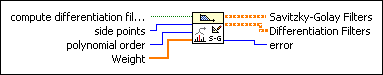

Savitzky-Golay Filter Coefficients VI
Owning Palette: Advanced FIR Filtering VIs
Requires: Full Development System
Designs a Savitzky-Golay FIR smoothing filter. This VI returns the designed Savitzky-Golay filter coefficients and the differentiation filter coefficients.

 Add to the block diagram Add to the block diagram |
 Find on the palette Find on the palette |